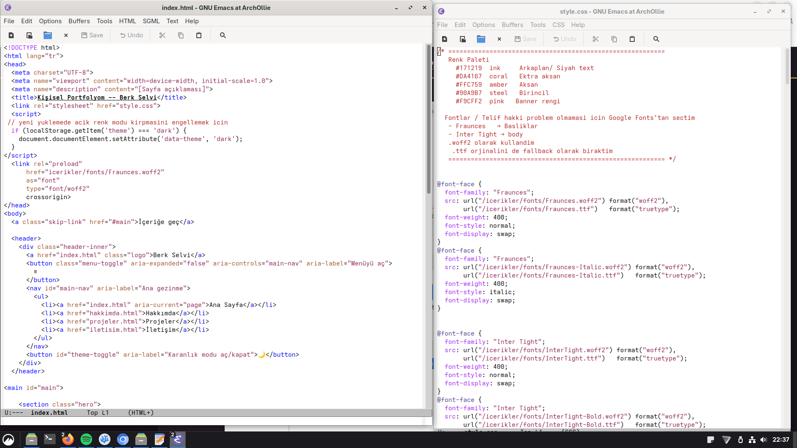
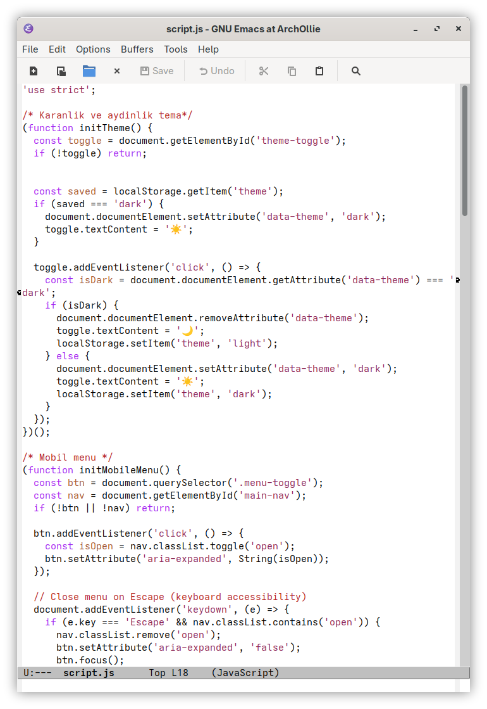

Projeler
Proje ara:
Kategori:
Tümü
Python
Medya
HTML
CSS
Javascript
Form
Eleştirel
Siyaset
Şiir
4 proje gösteriliyor.
Proje 1: Python Mini CLI Uygulaması, Alfred Medya Takip Robotu
Python
Medya
İzlediğiniz film ve dizileri kaydeden, sevdiklerinizi ve sevmediklerinizi
ayrı listelerde tutan, izleme listenizi yöneten ve Alfred'in size rastgele öneri sunduğu komut satırı uygulaması.
Ne öğrendim: Python syntax, looplar, operatorler
GitHub'da gör

Proje 2: Tanıtım Sayfası ve CSS Kartları
HTML
CSS
Responsive
HTML akışını (body, header, footer, h1, h2...), Flexbox ve grid ile responsive kartlar oluşturdum.
Ne öğrendim: header/nav/main/footer yapısı ve alt metinler, media query ve CSS değişkenleri.
Şu an bulunduğunuz web sitesi

Proje 3: JS Form Doğrulama
JavaScript
Form
Form alanlarını JavaScript ile doğruladım.
Ne öğrendim: addEventListener, aria-invalid, aria-live.
Proje 4: Avrupa Dış Politikası Araştırma Projesi "European Diplomatic Edge and Credibility Can Only be Preserved if Yankees Go Home"
Siyaset
Elestirel
Avrupa dış politikasını incelediğim ve NATO ile ilişkisini özerklik çerçevesinde tahlil ettiğim araştırma.
Ne öğrendim: Avrupa Siyaseti, iç ve dış ilişkiler, NATO, İran-ABD-İsrail ve İsrail-Filistin savaşları.
Yaziyi goruntule
The Gatherin at Eden -- Özgün Şiir
Şiir
Tarafımdan yazılmış şiir
Yaziyi goruntule